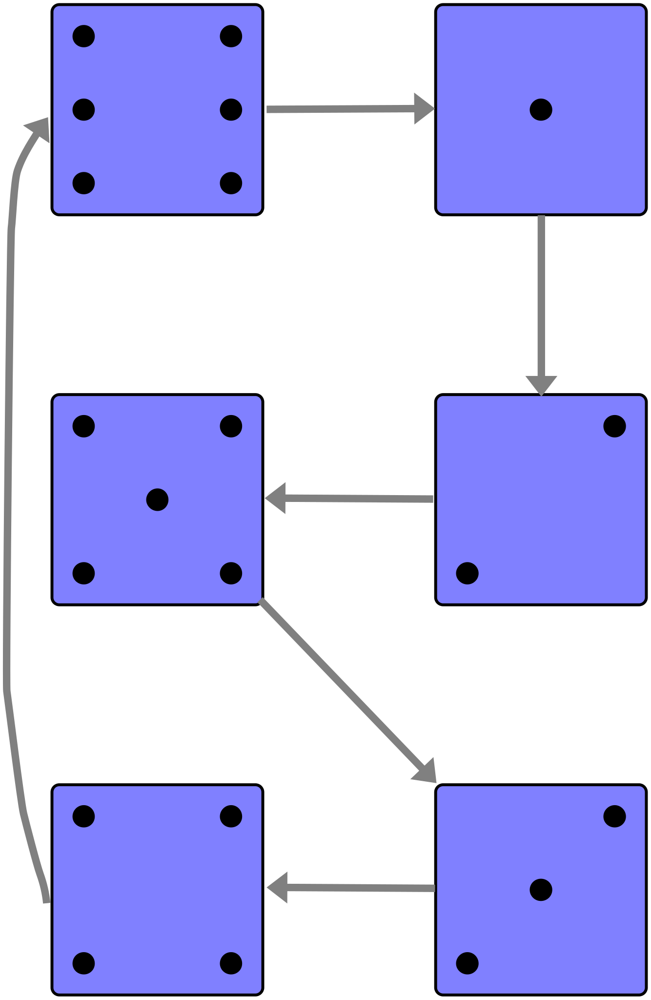

Haskell tutorial introduction
Haskell Curry is the namesake of the programming language Haskell.
This will be a compliment to the actual online Haskell tutorials listed below, emphasizing and expanding various points as they come up. Specifically, we’ll shadow LYAHFGG, the first and primary tutorial, pulling in extra examples and giving methods and concepts more depth.
There are many paths taken when learning Haskell. Being a very advanced programming environment, it is rich in theoretical computer science lore. But more than any other language (besides its cousins Ocaml, SML, and F#) Haskell includes a surprising amount of higher math. For example, Haskell leverages the abstract algebra concepts of semigroups and monoids.
We’ll save the more mathematical things for the main CIMIC show and just concentrate on the Haskell programming nuts-and-bolts.
Rabbit holes
Let’s repeat (most of) the Haskell rabbit hole list. Note that the first one is the compulsory dive.
‚åúüêá
- Learn You a Haskell for Great Good! (LYAHFGG) is a widely-used, often-suggested beginners site for starting out with Haskell. We’ll work through it in our CIIC tutorial. (RC-hole)
- A site haskell.org is suggesting is the UPenn course CIS194. We suggest the Spring 2015 version since it includes haskell source files. This is a college course, but for beginners. Click on the Lectures & Assignments link at the top. (If you’ve got our github repository there’s a directory containing all the Haskell files.) (RO-hole)
- An older but still go-to site recommended by many is the Real World Haskell site (also book). As the title suggests, it has a more real-applications slant, and yes, the material can get into heavy lifting, but one great advantage is it has prodigious comments attached to ever web page section. So if you didn’t understand something, typically somebody has already explained it in depth.
- Book-wise, a nice, well-paced text would be Get Programming with Haskell by Will Kurt. Will bridges a lot of chasms between beginner, intermediary, and advanced ideas. In other words, GPWH gives plain-English explanations of things other treatments might go deep into theory on. Really helpful, that. (RO-hole)
- Another big favorite for Haskell starters, but slightly more challenging is A Gentle Introduction to Haskell 98. AGITH uses more math terminology, which is what we’re doing, but from the shallow end first. (RO-hole)
- A while back the programming language Prolog created a list of ninety-nine sample problems that were solved using Prolog. Since then many languages have cooked up their own versions of answering the ninety-nine. Haskell’s is here. We’ll refer to this a lot. When you peek at the solutions, don’t get psyched out by some of the answers. Haskell Wiki is a volunteer site and very smart people like show off their skills resulting in some serious overkill. Just make sure you can handle the basic answers, and maybe just peruse the wilder versions. (RO-hole)
üêá‚åü
Setting up Haskell
We will use The Haskell Tool Stack, which is a project/package
management system for Haskell. In a nutshell, we will install stack,
and then use stack to set up a custom Haskell programming
environment. Besides the executable stack, there will also be the
Haskell compiler ghc and the Haskell interactive mode ghci which
are called as stack arguments
> stack ghci
> stack ghc
More on using them later.
This setup guide will go into detail only on the Linux Haskell install. For full details (also for other OS types) see The Haskell Tool Stack.
- The very first step might not be needed, but we’ll do it just to make sure. Haskell requires (and recommends) a set of Linux system programs and libraries. Run this at the command line (all on one line)
> sudo apt-get install g++ gcc libc6-dev libffi-dev libgmp-dev make xz-utils zlib1g-dev git gnupg netbase curl
Typically all of these (with the exception of curl) are already on your system and won’t be updated.- To install stack run
> curl -sSL https://get.haskellstack.org/ | sh
This will ask for your password; enter it to allow system-wide install. - Now you should have Haskell stack on your system. For confirmation
of success run
> which stack
This should return
/usr/local/bin/stack
or wherever thestackexecutable was installed. - Now, run
> echo 'PATH=$HOME/.local/bin:$PATH' >> ~/.bashrc
This tells your shell environment Another name for terminal or command line is shell. Each terminal you start with a command line interface is a shell with a shell environment. The.bashrcfile is its configuration file that is read and set up each time you start another terminal command line instance. about this new location where some of Haskell executables might be later on if we choose to install them. We’re not now, but it’s good to have this ahead of time. Kill your terminal, restart it, then check with
> echo $PATH
You should see something like
> /home/myhomedir/.local/bin:/usr/local/sbin:/usr/local/bin:...
…and many others possibly. But we see our/home/myhomedir/.local/bin. Good.
Again, stack is project-oriented. That means you have one programming
“project” that you want to accomplish. But for the time being we only
want to use the Haskell REPL
REPL stands for read, evaluate, print, loop, which is
essentially what your terminal command line is doing. That is to say,
the Haskell REPL, called ghci is an interactive world: Give it a
task, e.g., 1 + 1, and it returns a response, 2, then it gives you
back a prompt and waits for your next task. This is how LYAHFGG starts
out executing Haskell code.
to load the practice code we saved
into *.hs files, i.e., not a single project. Still, these *.hs
will reside in a project directory, a project that we set up with
stack — even though we won’t use the project files
specifically. Eventually, we’ll convert from using hs loaded into
the REPL session to using Emacs’ powerful org-mode literate
programming with the REPL. And then we might actually use the project
way to program in Haskell, especially if we want to create a
stand-alone executable.
- In your top home directory
You can always get back home by typing
cdand Enter. Then dopwdto confirm you’ve gone to top home. And you can always test where you are with> pwd(present working directory). create an org …anticipating using org mode. directory
> mkdir org
andcdinto it
> cd org - Now we’ll create a project, which will automatically create a new
directory with the same name under
~/org/. Type
> stack new haskellwork1(or whatever you want to call it)
which will set up a project in a subdirectory oforgcalledhaskellwork1. cdintohaskellwork1and dolsto get a file listing. You’ll see many newly created files and directories. But again, we will not use them at this point.- Still in the
haskellwork1directory type> stack setup
which should give a short message about using a sandboxed GHC etc. - Next, type
> stack build
which will run through an executable build procedure and return you the prompt. This actually builds the starter-dummy project we just created. All of this creates a Haskell programming environment we want. - To test our starter-dummy project’s new executable run
> stack exec haskellwork1-exe
which will returnsomeFucn, i.e., the output of the project’s dummy starter code. Again, this is just testing that the Haskell environment is ready. We’ll be creating our practice files in thehaskellwork1directory completely independent of thehaskellwork1project.
Let’s start
At this point we’re ready to go over to Miran Lipovaƒça’s very popular Learn You a Haskell For Great Good site and start in Maybe check out the FAQ. . Our first stop will be his Introduction. But before you start on this tutorial, go ahead and read his introduction, then move into Starting Out, then the next chapter Types and Typeclasses. Just read and try to understand at this point. We’ll borrow a few very rudimentary things from these chapters right here just for demonstration purposes. As you’ll see as we advance, we’ll typically explain one thing while relying on future (lightly), past (heavily), or parallel (appropriately) materials. \(\mathfrak{Fazit}\;\): Get in the habit of reading ahead We’re diving into the Introduction because it contains lots of ideas we really need to grok before we get going. .
So what’s Haskell? State and referential transparency
In just his So what’s Haskell? section Miran says a lot, so let’s unpack it a bit Actually, this page will deal only with that first paragraph. The rest we’ll incorporate in later pages. . First is the concept of state, which is a very big deal in computers, physics and engineering, as well as many other STEM and soft-science fields. When we say the state of things we mean the present conditions — which implies that the state might change. And we might have heard of phase, e.g., the three phases of matter: solid, liquid, and gaseous In addition to the states solid, liquid, gas, there’s also crystalline, colloid, glassy, amorphous, and plasma. . You’ll hear the terms phase of matter and the state of matter used interchangeably. In our treatment we will borrow from an explanation given by Susskind and Hrabovsky in their book The Theoretical Minimum See the video here. Just the first part is germane to our discussion here. .
Basically, a given situation we’re examining, a given system, can have
- degrees of freedom (DOF)
- states
- rules or laws describing the system’s progress or behavior
In their book, Susskind and Hrabovsky begin with a system consisting of one coin glued down to a table with heads up. So we have one coin (corresponding to one parameter or DOF) and just one possible state of this single DOF Degrees of freedom are not exactly the same as variables. A Cartesian coordinate system (CCS) with \(x\) and \(y\) axes can be thought of as a system with two DOF — or just one DOF. The difference is the relationship \(x\) and \(y\) are in. DOFs must be truly independent of one another. So if we’re just establishing a CCS as all possible coordinate pairs, both elements of a pair corresponding to all the real numbers running up and down each axis, then yes, the CCS has two DOFs. But if we’re talking about a function \(f(x) = y\;\) depicted on a CCS then we mean only one DOF, \(x;\) since the \(y\) is now considered dependent on \(x\), i.e., not free. Knowing this, how many DOFs does an operating traffic light have, one, two, three? coin, namely heads. If we try to describe this system, i.e., describe a law for the behavior of this system, we can intuitively see that it’s extremely restricted and minimalistic. The law for this system would simply be the state is always heads, i.e., the state never changes. Not very interesting, not very information-rich Contrast this with a writing system like English with twenty-six letters, which in comp-sci-speak is a “nonempty finite set of symbols.” There’s an infinite number of possible states of our English writing system, especially considering all the millions of people using it! .
We know intuitively what always means: constant, eternal, never ending. Such words imply time passing, steps, iterations taken — and a thing, a system remaining basically constant, the same. Words like perpetual, continual, periodic, intermittent, random, cyclic, acyclic, terminating, non-terminating, dynamic, static and many others all beg the notion of some process moving along, step-by-step perhaps, or assessed at intervals of time. Even words like deterministic and chaotic invoke the idea of something being repeatedly measured as to its state, then a pattern, a sequence When we use sequence we’ll be leaning into the mathematical meaning. Basically, a sequence is a an ordered list of things, objects, numbers that may or may not exhibit a pattern. As we explore set theory we’ll see math explained in terms of sets. For example, a sequence can be thought of as a function that maps the set of natural counting numbers (\(\mathbb{N} = 0,1,2,3,\ldots\;\;\;\)) to the set of objects that make up our ordered list. This may seem odd at first, but we just introduced the idea of indexing or enumerating the numerical position of the elements of our sequence. of states is generalized to a descriptive adjective.
A single coin system — not glued down — has one DOF with just two
possible states, to be decided by flipping the coin. We may then
perform a sequence of coin flips at our leisure to determine this
sequence of flips’ pattern, i.e., the coin-flip system’s
law
Think about how a car moving continuously along a road. We
could literally check its location down to the millisecond, giving us
a very fine, very time-dependent snapshot of its location. However,
coin flipping, which results in heads or tails, is discrete, i.e.,
when the coin lands it is instantly one or the other; hence, the
continuous passing of time isn’t relevant in the discrete world. Lots
more on discrete math coming.
. For example, if we flip our coin over and over and it
magically alternates between heads or tails, never deviating, we may
describe it, establish its law as following this formula
(1) is an example of a recurrence relation. You’re probably
more used to closed formulae. For example \(f(x) = x^{2}\;\) is a closed
version of this recurrence relation
\begin{align*}
f(0) &= 0 \\
f(n) &= f(n-1) + 2n-1 \;\; for \; n \ge 1
\end{align*}
Lots more on recurrence relations and recursion in general later.
In (1), \(\sigma\) (sigma) will stand for our single DOF. For the possible values of \(\sigma\) we say \(1\) means heads and \(-1\) means tails. \(n\) stands for the counting numbers (\(1,2,3,\ldots\;\)) that will serve to index each coin flip in a sequence of coin flips. For example, if on our first flip \(\sigma(1) = 1\;\), heads, then according to (1) our second flip \(\sigma(2)\;\) will be \(-1\;\) or tails since
\begin{align*} \sigma(1) &= 1\;\;\ldots\;\; \text{heads is our starting point} \\ \sigma(2) &= -\sigma(1) \;\;\ldots\;\; \text{using (1)} \\ \sigma(2) &= -(1) \;\;\ldots\;\; \text{substituting} \\ \sigma(2) &= -1 \quad \ldots\;\text{tails} \end{align*}The third flip in our sequence is
\begin{align*} \sigma(2) &= -1\;\;\ldots\;\; \text{tails is our starting point} \\ \sigma(3) &= -\sigma(2) \;\;\ldots\;\; \text{using (1)} \\ \sigma(3) &= -(-1) \;\;\ldots\;\; \text{substituting} \\ \sigma(3) &= 1 \;\;\ldots\;\; \text{heads} \end{align*}A table of the sequence of coin-flip states would be
| n | 1 | 2 | 3 | 4 | 5 | 6 | 7 | 8 |
| σ | 1 | -1 | 1 | -1 | 1 | -1 | 1 | -1 |
A Haskell version of (1) looks very similar
This Haskell code is meant to be just show-and-tell. If you’ve
read ahead you should be able to follow it. Quickly, we have a base
case, i.e., the first line where we establish whether the first flip
is heads or tails, then the recurrence relationship. Lots more about
Haskell recursion soon. (BTW, -- is a Haskell comment, not part of
the program.)
:{
σ 1 = 1 -- we start with 1, heads
σ n = (-1) * σ (n - 1)
:}
The only real difference is we’ve indicated in the base case (line 1) that flip 1 starts things off as heads. Also, we’ve reduced the function argument \(n\) by \(1\) on both side, which doesn’t affect it. Testing
σ 7
1
and this value checks against Table 1
Again, this is show code. We’ve used the unicode symbol œÉ for
sigma because Haskell recognizes it and it’s cool to look as
mathematical as possible, but usually we’ll just spell out function
names.
. We can produce a Haskell
version of a sequence of coin flip state changes with map
map is a function that takes a function, in our case σ, and
applies it to the individual elements of a list, then outputs the
resulting new list. This is our first demonstration of a functional
programming superpower, i.e., functions using not just regular data as
input, but other functions as well. Lots to come on this subject.
,
feeding it our σ function and a list generated from a Haskell
enumeration range from \(1\) to \(15\) corresponding to fifteen coin flips
map σ [1..15]
[1,-1,1,-1,1,-1,1,-1,1,-1,1,-1,1,-1,1]
Since Haskell is a typed language we could do better that faking heads with \(1\) and tails with \(-1\). We could create an actual custom-made data type for our state space
data Coin = Heads | Tails
We won’t go into how this can be incorporated into our function œÉ
yet, but notice that we have a “means the same thing” correspondence
between \(1\) and \(-1\) and Heads and Tails. In Haskell (and the type
theory math world) this correspondence is called an
isomorphism. Which basically means we can set up a translation
between these two representations of a flip outcome. Can you think of
other “either-or” two-possibility types? True and False, or Top
and Bottom, Left and Right, or even Sun and Moon or Mine
and Not-mine. For all of these versions of two-state either-or we
can create a translation from one to the other
One way of “jumping” in a two-state system from one state to
the other would be negation, e.g., \(Negate(1) = -1\;\;\). The Haskell
operator not does this (the math logic symbol is \(\lnot\;\;\)), which
works out of the box for some types, while for others the concept of
negation must be defined. Right. What would it mean to negate Moon
to Sun back to Moon again? More on this trick later.
. As we’ll see in
the not too distant future, Haskell likes to leverage isomorphisms…
Modular arithmetic
Everyone is familiar with clock modularity. So what time is it \(3\) hours past \(2\;\) o’clock? Obviously \(5\;\) o’clock. But what about \(15\) hours past \(2\!:\!00\;\)? So \(2 + 15 = 17\;\). Yes, but we ran out of clock at \(12\!:\!00\;\); anything beyond begins to repeat on the clock face. Therefore, an analog clock is said to have a modularity of \(12\;\). This means a single state change, i.e., adding \(1\) hour, or conducting a sequence In math the elements of a sequence are strictly consecutive. Again, a sequence’s elements and their order makes it unique. of state changes, e.g., adding \(x\) hours, can only match with one of twelve possible hours. In math-speak, our system’s law places us in a modulo-12 world where every enumerated state change is congruent to one of the twelve numbers of the clock face. Right.
| n | 1 | 2 | 3 | 4 | 5 | 6 | 7 | 8 | 9 | 10 | 11 | 12 | 13 | 14 | 15 | 16 | 17 | 18 | 19 | 20 | 21 | 22 | 23 | 24 | 25 | 26 |
| h | 1 | 2 | 3 | 4 | 5 | 6 | 7 | 8 | 9 | 10 | 11 | 12 | 1 | 2 | 3 | 4 | 5 | 6 | 7 | 8 | 9 | 10 | 11 | 12/0 | 1 | 2 |
Since we know timekeeping, we’re familiar with this idea of \(x\) hours from now is \(y\) o’clock. According to our table above, \(17\) or \(17\!:\!00\;\) matches with \(5\;\) o’clock, again, this is just military time. Now, what time would it be \(237\) hours from \(2:00\;\) Let’s forget counting days for now. ? Or, at the \(2 + 237 = 239\;\;\) state change, what is the state of our system given our system law is \(12\) strictly increasing and repeating states?
In modularity arithmetic we’re asking what number(s) is(are) congruent with \(239\) modulo \(12\;\), written \(239 \equiv x (mod 12)\;\;\)? This means if we line up \(1\) through \(12\;\), strictly increasing, over and over, back to back, matching them to our counting number index, \(239\) must match with some possible hour between \(1\) and \(12\;\).
Probably your first intuitive idea would be to just divide: \(239 \div 12 =\; ?\;\) … But we must be careful here, we’re in the realm of discrete numbers. Just any old calculator will give you a decimal number if it doesn’t divide it evenly, i.e., remainder zero. Let’s take a look at what Haskell does with a simpler situation from our table above. Consider \(14\) hours after starting. Again, with military time we see it corresponds to \(2\;\) o’clock, however,
14 / 12
1.1666666666666667
Unless we want to do some extra math (\(0.166667 \cdot 12 = 2.0\;\;\;\)), we
should try something else. Here’s a better way: Haskell’s quot will
give only the quotient part of a division
14 `quot` 12
1
So \(12\) “goes into” \(14\) one time, and the remainder of \(14 \div 12\;\) is
14 `rem` 12
2
or, even handier
14 `quotRem` 12
(1,2)
where the pair (1,2) indicates \(1\) for the quotient and \(2\) for the
remainder. Let’s try it on our bigger number
239 `quotRem` 12
(19,11)
Hmmm. Is one of these our answer, i.e., the first or second number in this tuple? Well, our table above only seems to match two twelve-hour clocks with a twenty-four-hour clock, then two more into the third twelve-hour clock. Perhaps the answer is saying we went \(19\) bunches of \(12\) forward, which amounted to \(228\;\), then we needed to go \(11\) additional hours to get to hour \(239\;\). Does that make sense?
One calculator on the Internet says \(239\) hours is \(9\) days and \(23\)
hours. But since a day is \(24\) hours, we should double \(9\) since there
are two go-rounds of the clock per day. That means \(18\) twelve-hour
half-days. Now \(23 - 12 = 11\;\;\). So adding in that last \(12\) hours
to \(18\) to get \(19\), we have what our quotRem calculation gave us,
\(19\) twelve-hour blocks, plus the additional \(11\) hours. In modular
math, we would say \(239 \equiv 11 \;mod\; (12)\;\), that is, \(239\) is
congruent to \(11\) modulo \(12\), which effectively means that as the
hours or state changes continue, \(11\) and \(239\) are related by being
multiples of \(12\) from each other, in fact, \(19\) multiples of \(12\)
separate them.
Throwing dice
Let’s look at dice as a system. Actually, we’ll just consider one single six-sided die, i.e., the six possible states in which the die system might be in after a throw. Using the Haskell list data structure, the state space can be expressed as elements of a list
dieState = [1,2,3,4,5,6]
➝ Question: Does the order of our states list matter, i.e., we have
enumeration of the six states, but is there ordinality?
➝ Answer: Yes and no. Just considering a listing of the possible
states, i.e., a state space list, no. But if we talk about a
sequence of throws, then a list of the sequential progression of
state changes would of course depend on order.
Again, the Haskell list data structure will be our best substitute for
a mathematical set or sequence, and we’ll work around its
limitations. For example, the Haskell lists [1,2,3,4,5,6] and
[6,5,4,3,2,1] are two different and unequal lists, even though as
mathematical sets they are considered the same. Hence, Haskell lists
aren’t the best for math sets where order (and even repeating
elements) don’t matter. But lists are adequate in depicting a math
sequence where the sequential order matters and a repeating element
does in fact mean a state has been repeated at that point.
Like in our coin example, we’ll start with a loaded or trick die that produces a steady repeating pattern of \(1,2,3,4,5,6,1,2,3,4,5,6,\ldots\;\;\;\) for \(1,2,3,\ldots,n\;\) rolls. The system cycles, i.e., repeats a six-throw sequence pattern Interestingly, a system that cycles in a probabilistic way, i.e., there’s a given chance of a certain state change happening, would be the domain of Markov chains, which we’ll look at later. . Hence, it is modular like our clock example above where every state of the sequence will be congruent to one of the elements of the state space.
| n | 1 | 2 | 3 | 4 | 5 | 6 | 7 | 8 | 9 | 10 | 11 | 12 | 13 | 14 | 15 | 16 | 17 | 18 |
| r | 1 | 2 | 3 | 4 | 5 | 6 | 1 | 2 | 3 | 4 | 5 | 6 | 1 | 2 | 3 | 4 | 5 | 6 |
What about a six-throw sequence that repeats a pattern, but not necessarily strictly-increasing like in Table 3?
 A cyclic 1-2-5-3-4-6 Law| n | 1 | 2 | 3 | 4 | 5 | 6 | 7 | 8 | 9 | 10 | 11 | 12 |
| r | 1 | 2 | 5 | 3 | 4 | 6 | 1 | 2 | 5 | 3 | 4 | 6 |
Now let’s consider all possible six-throw sequences. We have two situations
- What are the possible six-throw sequences without repeating any state?
- What are the possible six-throw sequences with one or more states
repeating, e.g.,
[1,1,2,3,4]or[1,3,6,3,5]or[2,4,4,4,1]?
This is a classic combinatorial Combinatorics is a large field of mathematics dealing with the how things are counted and combined according to given constraints. We’ll see more of this later. question. But is this a combinations or a permutations issue?
- A combination is a way to create or arrange a set or number of things.
- All possible combinations would be all possible unique (no two the same) orderings or arrangements of those things This definition came out of a “physics math” book. But is this really what we mean? It depends on what we mean by unique. Read on… .
This maybe sounds like what we want. One common math symbol for combinations is \(_nC_{k}\;\), another is \(C_{n}^{k}\;\). Another look often seen with the binomial coefficient is \(\binom{n}{k} \;\). However, these indicate the number of possible combinations, not a listing of the combinations themselves. You might have seen \(\binom{n}{k} \;\) or \(_nC_{k}\;\) in calculating the binomial coefficients of the expansion of a binomial raised to a power: \((x + y)^n \;\). This is meant to calculate the coefficient. So no, these are not what we want. We want something that creates sequences, not just returns a count.
Let’s look at some Haskell code and its output Again, YMMV on understanding this code. If you don’t yet, don’t worry.
:{
combinations :: Int -> [a] -> [[a]]
combinations 0 _ = [[]]
combinations _ [] = []
combinations n (x:xs) = (map (x:) (combinations (n-1) xs)) ++ (combinations n xs)
:}
combinations 2 [1,2,3]
[[1,2],[1,3],[2,3]]
This output is all possible combinations of three states into groups
of two states each. Already we can see a problem. Yes, these are
unique orderings of three into groups of two, like our definition
above says. But what about [2,1] or [3,1] or [3,2]? Why were
they not listed? Let’s try the possible unique ordering of six
states into groups of six.
combinations 6 [1,2,3,4,5,6]
[[1,2,3,4,5,6]]
Our code says only one possible “unique” grouping is returned. Now it’s clear that combinations is not what we want. We need something with awareness of sequences, i.e., the order of the possible groupings matter.
⇲ What about a combination lock? If
the “combination” of the lock is [5,15,7], would [15,5,7] or
[15,7,5] or [7,5,15] or [7,15,5] also open the lock? No — at
least they shouldn’t. So if only one sequence of three numbers opens
the lock, then we should call it a permutation lock.
Let’s look at our die state space again as a Haskell list, at this
point order just for convenience a = [1,2,3,4,5,6]. How could we
build new six-element lists — not repeating any of the numbers —
all with unique orders? Again, position in a sequence or a Haskell
list matters. So when we choose one of the six numbers from a we
have eliminated it from consideration for the rest of the
positions. That means we have \(6-1\;\) or \(5\) choices for the next
position. This patter continues until we only have the one choice for
the last position in the sequence/list.
If we want all the possible state change sequences we could use this code
import Data.List
:{
permutate :: (Eq a) => [a] -> [[a]]
permutate [] = [[]]
permutate l = [a:x | a <- l, x <- (permutate $ filter (\x -> x /= a) l)]
:}
Yes, this code will work — and output some \(720\) different sequences for our six-throw die We list out only a few…
permutate [1,2,3,4,5,6]
[[1,2,3,4,5,6],[1,2,3,4,6,5],[1,2,3,5,4,6],[1,2,3,5,6,4],[1,2,3,6,4,5],[1,2,3,6,5,4],[1,2,4,3,5,6],[1,2,4,3,6,5],[1,2,4,5,3,6],[1,2,4,5,6,3],[1,2,4,6,3,5],[1,2,4,6,5,3],[1,2,5,3,4,6],[1,2,5,3,6,4],[1,2,5,4,3,6],[1,2,5,4,6,3],[1,2,5,6,3,4],[1,2,5,6,4,3],[1,2,6,3,4,5],[1,2,6,3,5,4],[1,2,6,4,3,5],[1,2,6,4,5,3],[1,2,6,5,3,4],[1,2,6,5,4,3],[1,3,2,4,5,6],[1,3,2,4,6,5],[1,3,2,5,4,6],[1,3,2,5,6,4],[1,3,2,6,4,5],[1,3,2,6,5,4],[1,3,4,2,5,6],[1,3,4,2,6,5],[1,3,4,5,2,6],[1,3,4,5,6,2],[1,3,4,6,2,5],[1,3,4,6,5,2],[1,3,5,2,4,6],[1,3,5,2,6,4],[1,3,5,4,2,6],[1,3,5,4,6,2],[1,3,5,6,2,4],[1,3,5,6,4,2],[1,3,6,2,4,5],[1,3,6,2,5,4],[1,3,6,4,2,5],[1,3,6,4,5,2],[1,3,6,5,2,4],[1,3,6,5,4,2],[1,4,2,3,5,6],[1,4,2,3,6,5],[1,4,2,5,3,6],[1,4,2,5,6,3],[1,4,2,6,3,5],[1,4,2,6,5,3],[1,4,3,2,5,6],[1,4,3,2,6,5],[1,4,3,5,2,6],[1,4,3,5,6,2],[1,4,3,6,2,5],[1,4,3,6,5,2],[1,4,5,2,3,6],[1,4,5,2,6,3],[1,4,5,3,2,6],[1,4,5,3,6,2],[1,4,5,6,2,3],[1,4,5,6,3,2],[1,4,6,2,3,5],[1,4,6,2,5,3],[1,4,6,3,2,5],[1,4,6,3,5,2],[1,4,6,5,2,3],[1,4,6,5,3,2],[1,5,2,3,4,6],[1,5,2,3,6,4],[1,5,2,4,3,6],[1,5,2,4,6,3],[1,5,2,6,3,4],[1,5,2,6,4,3],[1,5,3,2,4,6],[1,5,3,2,6,4],[1,5,3,4,2,6],[1,5,3,4,6,2],[1,5,3,6,2,4],[1,5,3,6,4,2],[1,5,4,2,3,6],[1,5,4,2,6,3],[1,5,4,3,2,6],[1,5,4,3,6,2],[1,5,4,6,2,3],[1,5,4,6,3,2],[1,5,6,2,3,4],[1,5,6,2,4,3],[1,5,6,3,2,4],[1,5,6,3,4,2],[1,5,6,4,2,3],[1,5,6,4,3,2],[1,6,2,3,4,5],[1,6,2,3,5,4],[1,6,2,4,3,5],[1,6,2,4,5,3],[1,6,2,5,3,4],[1,6,2,5,4,3],[1,6,3,2,4,5],[1,6,3,2,5,4],[1,6,3,4,2,5],[1,6,3,4,5,2],[1,6,3,5,2,4],[1,6,3,5,4,2],[1,6,4,2,3,5],[1,6,4,2,5,3],[1,6,4,3,2,5],[1,6,4,3,5,2],[1,6,4,5,2,3],[1,6,4,5,3,2],[1,6,5,2,3,4],[1,6,5,2,4,3],[1,6,5,3,2,4],[1,6,5,3,4,2],[1,6,5,4,2,3],[1,6,5,4,3,2],[2,1,3,4,5,6],[2,1,3,4,6,5],[2,1,3,5,4,6],[2,1,3,5,6,4],[2,1,3,6,4,5],[2,1,3,6,5,4],[2,1,4,3,5,6],[2,1,4,3,6,5],[2,1,4,5,3,6],[2,1,4,5,6,3],[2,1,4,6,3,5],[2,1,4,6,5,3],[2,1,5,3,4,6],[2,1,5,3,6,4],[2,1,5,4,3,6],[2,1,5,4,6,3],[2,1,5,6,3,4],[2,1,5,6,4,3],[2,1,6,3,4,5],[2,1,6,3,5,4],[2,1,6,4,3,5],[2,1,6,4,5,3],[2,1,6,5,3,4],[2,1,6,5,4,3],[2,3,1,4,5,6],[2,3,1,4,6,5],[2,3,1,5,4,6],[2,3,1,5,6,4],[2,3,1,6,4,5],[2,3,1,6,5,4],[2,3,4,1,5,6],[2,3,4,1,6,5],[2,3,4,5,1,6],[2,3,4,5,6,1],[2,3,4,6,1,5],[2,3,4,6,5,1],[2,3,5,1,4,6],[2,3,5,1,6,4],[2,3,5,4,1,6],[2,3,5,4,6,1],[2,3,5,6,1,4],[2,3,5,6,4,1],[2,3,6,1,4,5],[2,3,6,1,5,4],[2,3,6,4,1,5],[2,3,6,4,5,1],[2,3,6,5,1,4],[2,3,6,5,4,1],[2,4,1,3,5,6],[2,4,1,3,6,5],[2,4,1,5,3,6],[2,4,1,5,6,3],[2,4,1,6,3,5],[2,4,1,6,5,3],[2,4,3,1,5,6],[2,4,3,1,6,5],[2,4,3,5,1,6],[2,4,3,5,6,1],[2,4,3,6,1,5],[2,4,3,6,5,1],[2,4,5,1,3,6],[2,4,5,1,6,3],[2,4,5,3,1,6],[2,4,5,3,6,1],[2,4,5,6,1,3],[2,4,5,6,3,1],[2,4,6,1,3,5],[2,4,6,1,5,3],[2,4,6,3,1,5],[2,4,6,3,5,1],[2,4,6,5,1,3],[2,4,6,5,3,1],[2,5,1,3,4,6],[2,5,1,3,6,4],[2,5,1,4,3,6],[2,5,1,4,6,3],[2,5,1,6,3,4],[2,5,1,6,4,3],[2,5,3,1,4,6],[2,5,3,1,6,4],[2,5,3,4,1,6],[2,5,3,4,6,1],[2,5,3,6,1,4],[2,5,3,6,4,1],[2,5,4,1,3,6],[2,5,4,1,6,3],[2,5,4,3,1,6],[2,5,4,3,6,1],[2,5,4,6,1,3],[2,5,4,6,3,1],[2,5,6,1,3,4],[2,5,6,1,4,3],[2,5,6,3,1,4],[2,5,6,3,4,1],[2,5,6,4,1,3],[2,5,6,4,3,1],[2,6,1,3,4,5],[2,6,1,3,5,4],[2,6,1,4,3,5],[2,6,1,4,5,3],[2,6,1,5,3,4],[2,6,1,5,4,3],[2,6,3,1,4,5],[2,6,3,1,5,4],[2,6,3,4,1,5],[2,6,3,4,5,1],[2,6,3,5,1,4],[2,6,3,5,4,1],[2,6,4,1,3,5],[2,6,4,1,5,3],[2,6,4,3,1,5],[2,6,4,3,5,1],[2,6,4,5,1,3],[2,6,4,5,3,1],[2,6,5,1,3,4],[2,6,5,1,4,3],[2,6,5,3,1,4],[2,6,5,3,4,1],[2,6,5,4,1,3],[2,6,5,4,3,1],[3,1,2,4,5,6],[3,1,2,4,6,5],[3,1,2,5,4,6],[3,1,2,5,6,4],[3,1,2,6,4,5],[3,1,2,6,5,4],[3,1,4,2,5,6],[3,1,4,2,6,5],[3,1,4,5,2,6],[3,1,4,5,6,2],[3,1,4,6,2,5],[3,1,4,6,5,2],[3,1,5,2,4,6],[3,1,5,2,6,4],[3,1,5,4,2,6],[3,1,5,4,6,2],[3,1,5,6,2,4],[3,1,5,6,4,2],[3,1,6,2,4,5],[3,1,6,2,5,4],[3,1,6,4,2,5],[3,1,6,4,5,2],[3,1,6,5,2,4],[3,1,6,5,4,2],[3,2,1,4,5,6],[3,2,1,4,6,5],[3,2,1,5,4,6],[3,2,1,5,6,4],[3,2,1,6,4,5],[3,2,1,6,5,4],[3,2,4,1,5,6],[3,2,4,1,6,5],[3,2,4,5,1,6],[3,2,4,5,6,1],[3,2,4,6,1,5],[3,2,4,6,5,1],[3,2,5,1,4,6],[3,2,5,1,6,4],[3,2,5,4,1,6],[3,2,5,4,6,1],[3,2,5,6,1,4],[3,2,5,6,4,1],[3,2,6,1,4,5],[3,2,6,1,5,4],[3,2,6,4,1,5],[3,2,6,4,5,1],[3,2,6,5,1,4],[3,2,6,5,4,1],[3,4,1,2,5,6],[3,4,1,2,6,5],[3,4,1,5,2,6],[3,4,1,5,6,2],[3,4,1,6,2,5],[3,4,1,6,5,2],[3,4,2,1,5,6],[3,4,2,1,6,5],[3,4,2,5,1,6],[3,4,2,5,6,1],[3,4,2,6,1,5],[3,4,2,6,5,1],[3,4,5,1,2,6],[3,4,5,1,6,2],[3,4,5,2,1,6],[3,4,5,2,6,1],[3,4,5,6,1,2],[3,4,5,6,2,1],[3,4,6,1,2,5],[3,4,6,1,5,2],[3,4,6,2,1,5],[3,4,6,2,5,1],[3,4,6,5,1,2],[3,4,6,5,2,1],[3,5,1,2,4,6],[3,5,1,2,6,4],[3,5,1,4,2,6],[3,5,1,4,6,2],[3,5,1,6,2,4],[3,5,1,6,4,2],[3,5,2,1,4,6],[3,5,2,1,6,4],[3,5,2,4,1,6],[3,5,2,4,6,1],[3,5,2,6,1,4],[3,5,2,6,4,1],[3,5,4,1,2,6],[3,5,4,1,6,2],[3,5,4,2,1,6],[3,5,4,2,6,1],[3,5,4,6,1,2],[3,5,4,6,2,1],[3,5,6,1,2,4],[3,5,6,1,4,2],[3,5,6,2,1,4],[3,5,6,2,4,1],[3,5,6,4,1,2],[3,5,6,4,2,1],[3,6,1,2,4,5],[3,6,1,2,5,4],[3,6,1,4,2,5],[3,6,1,4,5,2],[3,6,1,5,2,4],[3,6,1,5,4,2],[3,6,2,1,4,5],[3,6,2,1,5,4],[3,6,2,4,1,5],[3,6,2,4,5,1],[3,6,2,5,1,4],[3,6,2,5,4,1],[3,6,4,1,2,5],[3,6,4,1,5,2],[3,6,4,2,1,5],[3,6,4,2,5,1],[3,6,4,5,1,2],[3,6,4,5,2,1],[3,6,5,1,2,4],[3,6,5,1,4,2],[3,6,5,2,1,4],[3,6,5,2,4,1],[3,6,5,4,1,2],[3,6,5,4,2,1],[4,1,2,3,5,6],[4,1,2,3,6,5],[4,1,2,5,3,6],[4,1,2,5,6,3],[4,1,2,6,3,5],[4,1,2,6,5,3],[4,1,3,2,5,6],[4,1,3,2,6,5],[4,1,3,5,2,6],[4,1,3,5,6,2],[4,1,3,6,2,5],[4,1,3,6,5,2],[4,1,5,2,3,6],[4,1,5,2,6,3],[4,1,5,3,2,6],[4,1,5,3,6,2],[4,1,5,6,2,3],[4,1,5,6,3,2],[4,1,6,2,3,5],[4,1,6,2,5,3],[4,1,6,3,2,5],[4,1,6,3,5,2],[4,1,6,5,2,3],[4,1,6,5,3,2],[4,2,1,3,5,6],[4,2,1,3,6,5],[4,2,1,5,3,6],[4,2,1,5,6,3],[4,2,1,6,3,5],[4,2,1,6,5,3],[4,2,3,1,5,6],[4,2,3,1,6,5],[4,2,3,5,1,6],[4,2,3,5,6,1],[4,2,3,6,1,5],[4,2,3,6,5,1],[4,2,5,1,3,6],[4,2,5,1,6,3],[4,2,5,3,1,6],[4,2,5,3,6,1],[4,2,5,6,1,3],[4,2,5,6,3,1],[4,2,6,1,3,5],[4,2,6,1,5,3],[4,2,6,3,1,5],[4,2,6,3,5,1],[4,2,6,5,1,3],[4,2,6,5,3,1],[4,3,1,2,5,6],[4,3,1,2,6,5],[4,3,1,5,2,6],[4,3,1,5,6,2],[4,3,1,6,2,5],[4,3,1,6,5,2],[4,3,2,1,5,6],[4,3,2,1,6,5],[4,3,2,5,1,6],[4,3,2,5,6,1],[4,3,2,6,1,5],[4,3,2,6,5,1],[4,3,5,1,2,6],[4,3,5,1,6,2],[4,3,5,2,1,6],[4,3,5,2,6,1],[4,3,5,6,1,2],[4,3,5,6,2,1],[4,3,6,1,2,5],[4,3,6,1,5,2],[4,3,6,2,1,5],[4,3,6,2,5,1],[4,3,6,5,1,2],[4,3,6,5,2,1],[4,5,1,2,3,6],[4,5,1,2,6,3],[4,5,1,3,2,6],[4,5,1,3,6,2],[4,5,1,6,2,3],[4,5,1,6,3,2],[4,5,2,1,3,6],[4,5,2,1,6,3],[4,5,2,3,1,6],[4,5,2,3,6,1],[4,5,2,6,1,3],[4,5,2,6,3,1],[4,5,3,1,2,6],[4,5,3,1,6,2],[4,5,3,2,1,6],[4,5,3,2,6,1],[4,5,3,6,1,2],[4,5,3,6,2,1],[4,5,6,1,2,3],[4,5,6,1,3,2],[4,5,6,2,1,3],[4,5,6,2,3,1],[4,5,6,3,1,2],[4,5,6,3,2,1],[4,6,1,2,3,5],[4,6,1,2,5,3],[4,6,1,3,2,5],[4,6,1,3,5,2],[4,6,1,5,2,3],[4,6,1,5,3,2],[4,6,2,1,3,5],[4,6,2,1,5,3],[4,6,2,3,1,5],[4,6,2,3,5,1],[4,6,2,5,1,3],[4,6,2,5,3,1],[4,6,3,1,2,5],[4,6,3,1,5,2],[4,6,3,2,1,5],[4,6,3,2,5,1],[4,6,3,5,1,2],[4,6,3,5,2,1],[4,6,5,1,2,3],[4,6,5,1,3,2],[4,6,5,2,1,3],[4,6,5,2,3,1],[4,6,5,3,1,2],[4,6,5,3,2,1],[5,1,2,3,4,6],[5,1,2,3,6,4],[5,1,2,4,3,6],[5,1,2,4,6,3],[5,1,2,6,3,4],[5,1,2,6,4,3],[5,1,3,2,4,6],[5,1,3,2,6,4],[5,1,3,4,2,6],[5,1,3,4,6,2],[5,1,3,6,2,4],[5,1,3,6,4,2],[5,1,4,2,3,6],[5,1,4,2,6,3],[5,1,4,3,2,6],[5,1,4,3,6,2],[5,1,4,6,2,3],[5,1,4,6,3,2],[5,1,6,2,3,4],[5,1,6,2,4,3],[5,1,6,3,2,4],[5,1,6,3,4,2],[5,1,6,4,2,3],[5,1,6,4,3,2],[5,2,1,3,4,6],[5,2,1,3,6,4],[5,2,1,4,3,6],[5,2,1,4,6,3],[5,2,1,6,3,4],[5,2,1,6,4,3],[5,2,3,1,4,6],[5,2,3,1,6,4],[5,2,3,4,1,6],[5,2,3,4,6,1],[5,2,3,6,1,4],[5,2,3,6,4,1],[5,2,4,1,3,6],[5,2,4,1,6,3],[5,2,4,3,1,6],[5,2,4,3,6,1],[5,2,4,6,1,3],[5,2,4,6,3,1],[5,2,6,1,3,4],[5,2,6,1,4,3],[5,2,6,3,1,4],[5,2,6,3,4,1],[5,2,6,4,1,3],[5,2,6,4,3,1],[5,3,1,2,4,6],[5,3,1,2,6,4],[5,3,1,4,2,6],[5,3,1,4,6,2],[5,3,1,6,2,4],[5,3,1,6,4,2],[5,3,2,1,4,6],[5,3,2,1,6,4],[5,3,2,4,1,6],[5,3,2,4,6,1],[5,3,2,6,1,4],[5,3,2,6,4,1],[5,3,4,1,2,6],[5,3,4,1,6,2],[5,3,4,2,1,6],[5,3,4,2,6,1],[5,3,4,6,1,2],[5,3,4,6,2,1],[5,3,6,1,2,4],[5,3,6,1,4,2],[5,3,6,2,1,4],[5,3,6,2,4,1],[5,3,6,4,1,2],[5,3,6,4,2,1],[5,4,1,2,3,6],[5,4,1,2,6,3],[5,4,1,3,2,6],[5,4,1,3,6,2],[5,4,1,6,2,3],[5,4,1,6,3,2],[5,4,2,1,3,6],[5,4,2,1,6,3],[5,4,2,3,1,6],[5,4,2,3,6,1],[5,4,2,6,1,3],[5,4,2,6,3,1],[5,4,3,1,2,6],[5,4,3,1,6,2],[5,4,3,2,1,6],[5,4,3,2,6,1],[5,4,3,6,1,2],[5,4,3,6,2,1],[5,4,6,1,2,3],[5,4,6,1,3,2],[5,4,6,2,1,3],[5,4,6,2,3,1],[5,4,6,3,1,2],[5,4,6,3,2,1],[5,6,1,2,3,4],[5,6,1,2,4,3],[5,6,1,3,2,4],[5,6,1,3,4,2],[5,6,1,4,2,3],[5,6,1,4,3,2],[5,6,2,1,3,4],[5,6,2,1,4,3],[5,6,2,3,1,4],[5,6,2,3,4,1],[5,6,2,4,1,3],[5,6,2,4,3,1],[5,6,3,1,2,4],[5,6,3,1,4,2],[5,6,3,2,1,4],[5,6,3,2,4,1],[5,6,3,4,1,2],[5,6,3,4,2,1],[5,6,4,1,2,3],[5,6,4,1,3,2],[5,6,4,2,1,3],[5,6,4,2,3,1],[5,6,4,3,1,2],[5,6,4,3,2,1],[6,1,2,3,4,5],[6,1,2,3,5,4],[6,1,2,4,3,5],[6,1,2,4,5,3],[6,1,2,5,3,4],[6,1,2,5,4,3],[6,1,3,2,4,5],[6,1,3,2,5,4],[6,1,3,4,2,5],[6,1,3,4,5,2],[6,1,3,5,2,4],[6,1,3,5,4,2],[6,1,4,2,3,5],[6,1,4,2,5,3],[6,1,4,3,2,5],[6,1,4,3,5,2],[6,1,4,5,2,3],[6,1,4,5,3,2],[6,1,5,2,3,4],[6,1,5,2,4,3],[6,1,5,3,2,4],[6,1,5,3,4,2],[6,1,5,4,2,3],[6,1,5,4,3,2],[6,2,1,3,4,5],[6,2,1,3,5,4],[6,2,1,4,3,5],[6,2,1,4,5,3],[6,2,1,5,3,4],[6,2,1,5,4,3],[6,2,3,1,4,5],[6,2,3,1,5,4],[6,2,3,4,1,5],[6,2,3,4,5,1],[6,2,3,5,1,4],[6,2,3,5,4,1],[6,2,4,1,3,5],[6,2,4,1,5,3],[6,2,4,3,1,5],[6,2,4,3,5,1],[6,2,4,5,1,3],[6,2,4,5,3,1],[6,2,5,1,3,4],[6,2,5,1,4,3],[6,2,5,3,1,4],[6,2,5,3,4,1],[6,2,5,4,1,3],[6,2,5,4,3,1],[6,3,1,2,4,5],[6,3,1,2,5,4],[6,3,1,4,2,5],[6,3,1,4,5,2],[6,3,1,5,2,4],[6,3,1,5,4,2],[6,3,2,1,4,5],[6,3,2,1,5,4],[6,3,2,4,1,5],[6,3,2,4,5,1],[6,3,2,5,1,4],[6,3,2,5,4,1],[6,3,4,1,2,5],[6,3,4,1,5,2],[6,3,4,2,1,5],[6,3,4,2,5,1],[6,3,4,5,1,2],[6,3,4,5,2,1],[6,3,5,1,2,4],[6,3,5,1,4,2],[6,3,5,2,1,4],[6,3,5,2,4,1],[6,3,5,4,1,2],[6,3,5,4,2,1],[6,4,1,2,3,5],[6,4,1,2,5,3],[6,4,1,3,2,5],[6,4,1,3,5,2],[6,4,1,5,2,3],[6,4,1,5,3,2],[6,4,2,1,3,5],[6,4,2,1,5,3],[6,4,2,3,1,5],[6,4,2,3,5,1],[6,4,2,5,1,3],[6,4,2,5,3,1],[6,4,3,1,2,5],[6,4,3,1,5,2],[6,4,3,2,1,5],[6,4,3,2,5,1],[6,4,3,5,1,2],[6,4,3,5,2,1],[6,4,5,1,2,3],[6,4,5,1,3,2],[6,4,5,2,1,3],[6,4,5,2,3,1],[6,4,5,3,1,2],[6,4,5,3,2,1],[6,5,1,2,3,4],[6,5,1,2,4,3],[6,5,1,3,2,4],[6,5,1,3,4,2],[6,5,1,4,2,3],[6,5,1,4,3,2],[6,5,2,1,3,4],[6,5,2,1,4,3],[6,5,2,3,1,4],[6,5,2,3,4,1],[6,5,2,4,1,3],[6,5,2,4,3,1],[6,5,3,1,2,4],[6,5,3,1,4,2],[6,5,3,2,1,4],[6,5,3,2,4,1],[6,5,3,4,1,2],[6,5,3,4,2,1],[6,5,4,1,2,3],[6,5,4,1,3,2],[6,5,4,2,1,3],[6,5,4,2,3,1],[6,5,4,3,1,2],[6,5,4,3,2,1]]
permutations is a built-in Haskell function that is the same as
permutate above
If you try this at home you must first do import Data.List
or just import Data.List (permutations).
.
length $ permutations [1,2,3,4,5,6]
720
Computer and program state
Let’s start with an example of what a program state scenario might look like. In programming we routinely need to repeat or iterate some task a given number of times. Imperative languages typically use loops, while functional languages use recursion. For a very basic example consider factorial, i.e., \(n!\;\), first in Python
def factorial(n):
num = 1
while n >= 1:
num = num * n
n = n - 1
return num
factorial takes n as its input parameter, then it establishes the
variable num that will serve as a counter or index. Then begins
what is knows as a while loop. The indentation tells us that the
next two steps num = num * n and n = n - 1 will be repeated
while the condition n >= 1 is true
n >= 1 n is greater than or equal to 1.
, the n = n - 1 line
decrementing n each time through. For example, starting with n
as 4, the state of this code when it enters its while loop is
| n = 4 | n >= 1 true | num = 1 * 4 = 4 |
| n = 3 | n >= 1 true | num = 4 * 3 = 12 |
| n = 2 | n >= 1 true | num = 12 * 2 = 24 |
| n = 1 | n >= 1 true | num = 24 * 1 = 24 |
| n = 0 | n >= 1 false | (while loop ends) |
and the returned value num in its latest and final state, is
24. And so we see how an imperative-style programming language
relies on updating variables, i.e., changing the state of variables.
In our example n and num are both updated four times during the
while loop.
A purely functional language like Haskell, however, never declares a
variable and then later changes its value, its state. A repeating task
or calculation done with a loop are handled exclusively by
recursion. We’ll have a more detailed exploration of recursion later,
but for now let’s just look at factorial in simple Haskell code
We’ll learn all of Haskell’s conditional operators, e.g., a
== b is a equal to b? later.
:{
factorial n | n == 1 = 1
| otherwise = n * factorial (n - 1)
:}
Here we see functional programming’s secret weapon, i.e., the ability
of a function to call itself, to refer to itself, to go back into
itself over and over. Recalling a previous recurrence relation
example, we can write factorial as a recurrence relation
What would be the “closed” version of factorial? Convince
yourself
\begin{align*}
n! = \prod_{i=1}^{n }i
\end{align*}
the recursive and closed versions are identical. BTW, a Haskell
version of this would be factClosed n = product [1..n]
we see the same basic idea, i.e., we establish a starting value or base case for \(f\) when \(n\) is \(0\;\), then a recursive step for all \(n\) not \(0\) where \(f(n)\) is being defined in terms of a previous version of itself \(f(n-1)\;\). Let’s evaluate it
factorial 4
24
So what do you imagine is happening with this factorial code where
it seems to be going back into itself — over and over? Let’s imagine
a game you might play with a group of people who will help you with an
adding game. We’ll start with you and a group of people all sitting in
a circle facing each other. You all roll your die and remember your
numbers. You rolled \(4\;\) That means you’ll stand up and go around the
circle counter-clockwise to the fourth person and ask them their
number. Sally is the fourth person and she rolled a \(2\). You write
down \(2\;\). Moving back clockwise, Ralph is next and his number is
\(6\). You write down \(+ \;6\) after the \(2\) just like adding
horizontally. Next, is Harriet and her number is \(5\). Now you have
\(2 + 6 + 5\;\) written down. The last person coming back clockwise is
Kurt and his number is \(1\;\). Now you have \(2 + 6 + 5 + 1\;\) and
you’re back where you started. You then add up the four numbers to get
\(14\;\).
Obviously, you could play this game of adding random numbers chosen between \(1\) and \(6\) with just two other people. So you roll your die and get \(4\) again. So you tell Sally to remember \(4\;\), who this time will be your indexer/counter. Then Ralph, who will be the accumulator or augend augend: the number to which another is added, which can then server as an accumulator. Why is there an augend and an addend with addition? Because addition is a binary operation. Despite the illusion of adding a whole column of numbers at once, at the computational level, addition is happening between two and only two numbers at a time, i.e., both in the digital circuitry and abstract algebra. We’ll discuss where this misunderstanding arises when we investigate the associativity nature of binary operations. this time, rolls his die. Ralph rolls \(2\) and remembers. Then Sally subtracts \(1\) from \(4\) to get \(3\). Then Ralph rolls again and gets \(6\). He adds the previous \(2\) to \(6\) in his head to get \(8\) and makes sure to remember. Sally again decrements \(3\) to \(2\;\). Ralph again rolls and gets \(5\). He adds this to his previous \(8\) and now has \(13\). Sally decrements to \(2\). Ralph rolls and gets \(1\), then adds this to \(13\) to get \(14\;\). Sally decrements to \(1\), which will signal a halt to Ralph rolling and adding. Ralph reports his final amount as \(14\;\).
The circle version of this might seem a tad long and drawn-out, the two-person version more “compact,” but what is the fundamental difference? The answer is important to understanding what separates imperative and declarative functional programming. One version is constantly changing the state of variables, the other is not. Think about it. With the circle version of adding random numbers, is anything we might consider a degree of freedom or variable being changed? No. We’re simply manipulating, rewriting terms like when we work out a formula given an input and then we show our work. Why do this? That’s also a big deal. It holds the “no side effects” mandate of pure functional programming, “side effects” being the changing of variable states. It’s also functions not always returning the same values given the same inputs. But isn’t this too restrictive? you might ask, after all, if you’re careful all should be good. Ha! These are “famous last words” in the computer world. Yes, tolerating side effects inside of functions where the scope of changing variables is limited to just that function would seem safe, but what about a so-called global variable, i.e., a variable accessible to different functions throughout the code? The classic bug is when one part of your code changes a variable that another part did not realize had been changed and then causes an error.
But doesn’t no side effects also mean we can’t even ask simple things
like list all the files in directory X? After all, the function
listfiles would give different answers for different directories,
thereby violating your referential transparency rule. Yes and
no. Haskell has a trick called monads that is a work-around, i.e.,
Haskell stays pure, but keeps a method handy to allow some side
effect.
What we’ve learned from just one paragraph
Was all this just about one paragraph? Yes, this has been a very long-winded unpacking of just that first So what’s Haskell paragraph, but remember that we’re on the hunt for the computer version of the “mental representations” of mathematics. This can get quite exacting and involved. But formalistic rigor is your friend in this realm. And again, we can’t emphasize enough that comp-sci programs hit this stuff hard! So we’re about building an on-ramp to this computer-based “mental representation”. After all comp-sci got most of its methods and concepts from higher math.